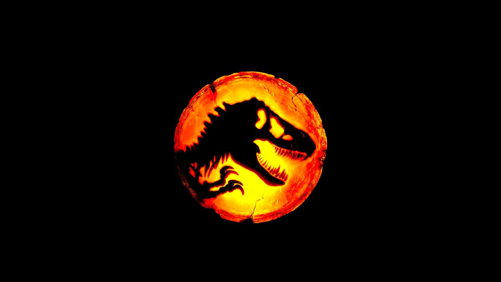

Jurassic Park: O Parque dos Dinossauros
12 Duração: 127 min Gênero: Aventura/Ficção Científica Ano: 1993
Sinopse
O bilionário John Hammond cria um parque temático em uma ilha isolada, onde dinossauros foram trazidos de volta à vida por meio de engenharia genética.
Antes da inauguração, ele convida o paleontólogo Alan Grant, a paleobotânica Ellie Sattler e o matemático Ian Malcolm para avaliar o parque.
Durante a visita, uma falha no sistema de segurança desliga as cercas elétricas e os dinossauros ficam soltos. Os visitantes precisam lutar para sobreviver e escapar da ilha.

Trailer
